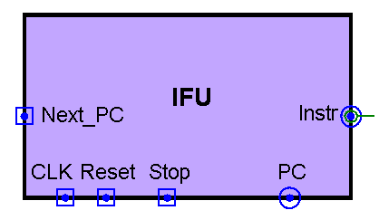
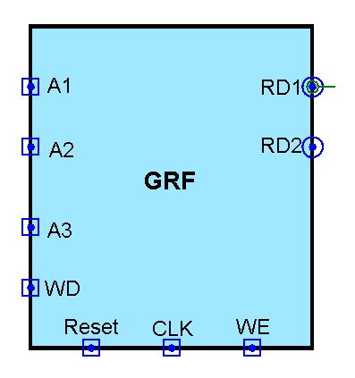
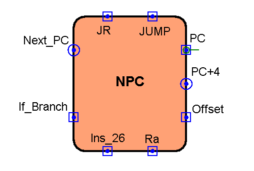
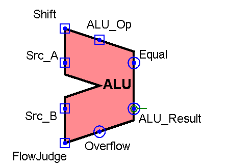
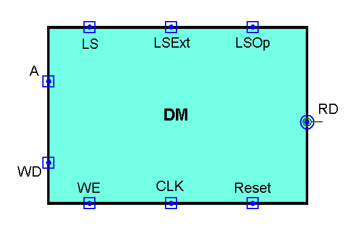
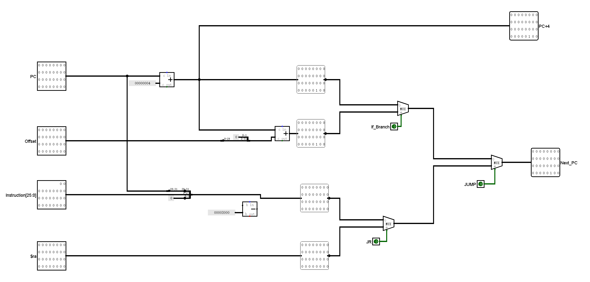
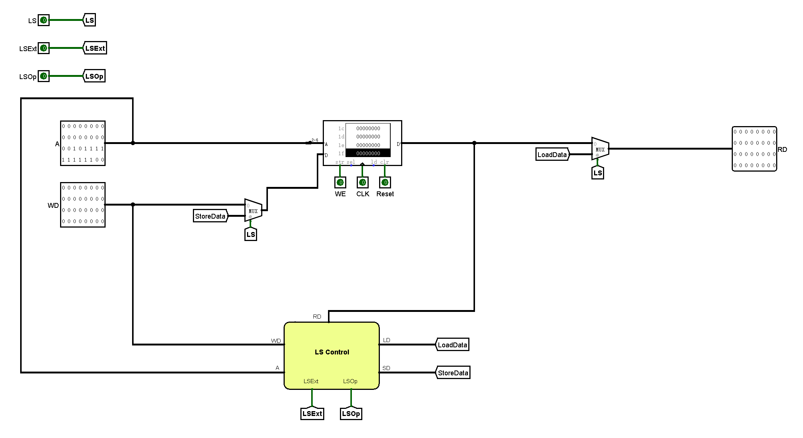

单周期CPU设计方案
设计概述
本文所设计的CPU为Losgisim实现的单周期MIPS架构CPU，该CPU支持43条MIPS汇编指令，为了实现该功能，笔者设计了IFU，GRF，NPC，ALU，DM，Control Unite，Branch Control，LS Control等关键模块。整个搭建过程通过自下而上的方式完成——先根据应实现的指令对功能部件进行设计与搭建，然后对各个功能部件进行连接，形成完整的数据通路。
实现指令说明
本CPU支持43条指令，包括19条R型指令，2条J型指令，22条I型指令。
R型指令
- 算数/位运算指令：add, addu, sub, subu, and, or, nor, xor
- 移位指令：sll, srl, sra, sllv, srlv, srav
- 置位指令：slt, sltu
- 跳转指令：jr, jalr
- 系统调用：syscall
J型指令
- 跳转指令：j, jal
I型指令
- 算数/位运算指令： addi, andi, addiu, ori, xori, lui
- B类指令：beq, bne, bgtz, bgez, blez, bltz
- 置位指令：slti, sltiu
- 访存指令：lw, sw, lh, lhu, lb, lbu, sh, sb
数据通路模块定义
IFU（取指令单元）
该模块内部包含PC（程序计数器）和IM（指令存储器），PC通过Logism内置的32位寄存器实现， IM通过Logisim内置的ROM实现（容量为32*32bit）。可以根据PC的值从IM取出对应的指令，并具有异步复位的功能。

- 端口定义
|信号名|方向|位宽|描述|
|——|——|——|——|
|CLK|I|1|时钟信号|
|Reset|I|1|异步复位信号|
|Stop|I|1|停止信号|
|Next_PC|I|32|下一条要被执行的指令的地址|
|PC|O|32|输出当前正在执行的指令的地址|
|Instr|O|32|输出当前正在执行的指令| - 功能定义
|序号|功能名称|功能描述|
|—|—|—|
|1|复位|当Reset信号有效时，将PC寄存器中的值置为0x00000000|
|2|停止|当Stop信号有效时，PC寄存器忽略时钟输入，PC当前值保持不变|
|3|写PC寄存器|当Stop信号失效且时钟上升沿来临时，将下一条指令的地址（next PC）写入PC寄存器|
|4|取指令|根据当前PC的值从IM（指令存储器）中读出对应的指令到Instr端口|
GRF（通用寄存器组）
该模块内部包含32个具有写使能32位寄存器，分别对应MIPS架构中$0 ~ $31通用寄存器（其中0号寄存器中的值恒为0，即不具备写使能）。GRF可以实现异步复位，同时可以根据输入的5位地址（0~31）向寄存器堆存取数据，实现定向访存寄存器。

端口定义
|信号名|方向|位宽|描述|
|——|——|——|——|
|CLK|I|1|时钟信号|
|Reset|I|1|异步复位信号
1：复位信号有效
0：复位信号无效|
|A1|I|5|地址输入信号，指定32个寄存器中的一个，将其中的数据读出到RD1|
|A2|I|5|地址输入信号，指定32个寄存器中的一个，将其中的数据读出到RD2|
|A3|I|5|地址输入信号，指定32个寄存器中的一个，将其作为写入目标|
|WD|I|32|数据输入信号|
|WE|I|1|写使能信号
1：写入有效
0：写入失效|
|RD1|O|32|输出A1指定的寄存器中的32位数据|
|RD2|O|32|输出A2指定的寄存器中的32位数据|功能定义
|序号|功能名称|功能描述|
|—|—|—|
|1|复位|Reset信号有效时，所有寄存器中储存的值均被清零|
|2|读数据|读出A1，A2地址对应的寄存器中储存的数据，将其加载到RD1和RD2|
|3|写数据|当WE信号有效且时钟上升沿来临时，将WD中的数据写入到A3地址对应的寄存器|
NPC（下一指令计算单元）
该模块根据当前指令地址和其他控制信号（“JR”，“JUMP”等），计算出下一指令所在的地址。

- 端口定义
|信号名|方向|位宽|描述|
|——|——|——|——|
|PC|I|32|当前指令地址|
|Offset|I|32|地址偏移量，用于计算B类指令所要跳转的地址|
|Ins_26|I|26|当前指令数据的前26位（0~25），用于计算jal和j指令所要跳转的地址|
|Ra|I|32|储存在寄存器（$ra或是jalr指令中存储“PC+4”的寄存器）中的地址数据，用于实现jr和jalr指令|
|If_Branch|I|1|B类指令选择信号
1：说明当前指令为B类指令
0：说明当前指令不是B类信号
|JR|I|1|输入“JR”控制信号
1：说明当前指令为jr或jal
0：说明当前指令不是jr和jalr|
|JUMP|I|1|输入“JUMP”控制信号
1：说明当前指令为j或jal
0：说明当前指令不是为j和jump|
|Next_PC|O|32|输出下一指令地址|
|PC+4|O|32|输出PC+4的值，用于实现jal和jalr指令中的地址存储|
注：关于“If_branch”，“JR”，“JUMP”端口信号的选择作用将在“”部分进一步说明
ALU（逻辑运算单元）
该模块可实现加，减，按位与，按位或等11种运算，并根据ALUOP信号的值在这些功能中进行选择。除此之外，该模块还可以实现溢出判断。

- 端口定义
|信号名|方向|位宽|描述|
|——|——|——|——|
|ALU_Op|I|4|ALU功能选择信号|
|Src_A|I|32|参与ALU计算的第一个值|
|Src_B|I|32|参与ALU计算的第二个值|
|Shift|I|5|移位数输入|
|FlowJudge|I|1|溢出判断信号
1：进行溢出判断
0：不进行溢出判断|
|Equal|O|1|相等判断信号
1：Src_A和Src_B相等
0：Src_A和Src_B不相等|
|ALU_Result|O|32|输出ALU计算结果|
|Overflow|O|1|输出ALU计算结果的溢出情况（add，sub，addi等指令有效）
1：ALU计算结果溢出
0：ALU计算结果 | - 功能定义
|序号|功能名称|ALU_Op|功能描述|
|—|—|—|———|
|1|加|0b0000|ALU_Result = Src_A + Src_B|
|2|减|0b0001|ALU_Result = Src_A - Src_B|
|3|按位与|0b0010|ALU_Result = Src_A & Src_B|
|4|按位或|0b0011|ALU_Result = Src_A | Src_B|
|5|按位异或|0b0100|ALU_Result = Src_A ⊕ Src_B|
|6|按位或非|0b0101|ALU_Result = ~(Src_A | Src_B)|
|7|逻辑左移|0b0110|ALU_Result = Src_B << Shift|
|8|逻辑右移|0b0111|ALU_Result = Src_B >> Shift|
|9|算术右移|0b1000|ALU_Result = Src_B >>> Shift|
|10|带符号比较|0b1001|ALU_Result = (Src_A > Src_B) ? 1 : 0（带符号比较）|
|11|无符号比较|0b1010|ALU_Result = (Src_A > Src_B) ? 1 : 0（无符号比较）|DM （数据存储器）
该模块使用了Logism自带的RAM，不仅可以实现对数据的存储与访问，还通过“LS”，“LSExt”，“LSop”等控制信号对字节/半字进行操作，并具有异步复位功能。
- 端口定义
|信号名|方向|位宽|描述|
|——|——|——|——|
|CLK|I|1|时钟信号|
|Reset|I|1|异步复位信号|
|A|I|5|地址输入信号，指向数据储存器中某个存储单元|
|WD|I|32|数据输入信号|
|WE|I|1|写使能信号
1：写入有效
0：写入失效|
|LS|I|1|输入“LS”控制信号
1:说明当前指令是对字节/半字的操作
0:执行其他指令（包括lw和sw）|
|LSExt|I|1|输入“LSExt”控制信号
1：对DM中读出的字节/半字进行符号扩展（lb,lh指令）
0：对DM中读出的字节/半字进行符号扩展（lbu，lhu指令）|
|LSOp|I|1|输入“LSOp”控制信号
1：执行半字操作指令（lh，lhu，sh）
0：执行字节操作指令（lb，lbu，sb）|
|RD|O|32|输出A指定的存储单元中的32位数据| - 功能定义
|序号|功能名称|功能描述|
|—|—|—|
|1|复位|Reset信号有效时，所有寄存器中储存的值均被清零|
|2|读数据|读出A地址对应的存储单元中的数据，将其加载到RD|
|3|写数据|当WE信号有效且时钟上升沿来临时，将WD中的数据写入到A地址对应的存储单元|
注：关于“LS”，“LSExt”，“LSop”端口信号的选择作用将在“”部分进一步说明Branch Control（B类指令控制模块）
该模块通过接收“Branch”，“Branch_Op”等控制信号，将对转移条件进行判断，并输出判断结果。
- 端口定义
|信号名|方向|位宽|描述|
|——|——|——|——|
|D|I|32|输入32位数据，用于和0进行比较（实现blez，bgez，bltz，bgtz）|
|Equal|I|1|相等判断信号，即ALU模块中Src_A和Src_B的比较结果（实现beq，bne）|
|Branch|I|1|B类指令判断信号
1：当前执行的指令B类指令
0：其他指令|
|BranchOp|I|3|B类指令选择指令
0b000：beq指令
0b001：bgez，bltz
0b010：bgtz
0b011：blez
0b100：bne|
|Judge|I|1|区别bgez，bltz两个指令|
|Result|O|1|输出判断结果
1：B类指令转移条件成立
0：B类指令转移条件不成立|
注：关于“Branch”，“BranchOp”端口信号的选择作用将在“”部分进一步说明控制模块定义
在控制模块中，我们对指令中Opcode域和Funct域中的数据进行解码，输出ALUOp,MemtoReg等19条控制指令，从而对数据通路进行调整，满足不同指令的需求。为实现该模块，我们又在内部设计了两个子模块——和逻辑（AND Logic）和或逻辑（OR Logic）。前者的功能是识别，将输入的Opcode和Funct数据识别为对应的指令，后者的功能是生成，根据输入指令的不同产生不同的控制信号。
- 控制信号定义
|序号|信号名|位宽|描述|触发指令（信号为1）|
|—-|——-|—-|——|——————-|
|1|MemToReg|1|GRF中WD接口输入数据选择|lw, lb, lbu, lh, lhu
|2|MemWrite|1|DM写入使能信号|sw, sb, sh
|3|ALUSrc|1|ALU中Src_B接口输入数据选择|addi, andi, addiu, slti, ori, lw, sw, sltiu, xori, lb, lbu, lh, lhu, sb, sh, lui
|4|RegWrite|1|GRF写入使能信号|sll, sra, srl, add, addu, sub, and, or, nor, slt, sltu, jalr, xor, sllv, srav, srlv, subu, jal, addi, andi, addiu, slti, ori, lw, sltiu, xori, lb, lbu, lh, lhu, lui
|5|SYSCALL|1|syscall指令译码信号，GRF中A1接口输入数据选择|syscall
|6|SignedExt|1|立即数符号扩展选择|addi, addiu, slti, sltiu, lw, sw, lb, lbu, lh, lhu, sb, sh
|7|RegDst|1|GRF中A3接口输入数据选择|sll, sra, srl, add, addu, sub, and, or, nor, slt, sltu, jalr, xor, sllv, srav, srlv, subu
|8|Branch|1|B类指令判断信号|beq, bne, bgez, bgtz, blez, bltz
|9|BranchOp|3|B类指令选择信号|见Branch模块
|10|JR|1|J类指令选择信号|jalr, jr
|11|JUMP|1|J类指令判断信号|jalr, jr, j, jal
|12|AddrTrans|1|指令地址传递信号，选择是否将PC+4输入到GRF的WD端口|jal, jalr
|13|RaLink|1|$ra寄存器写入选择信号，选择是否将$ra作为GRF的写入对象|jal
|14|VarShift|1|可变移位选择信号，选择是否将指令rs域的五位数据写入ALU的Shift接口|srav, srlv, sllv
|15|FlowJudge|1|溢出判断选择信号|add, sub, addi
|16|LS|1|字节/半字操作选择信号|lb, lbu, lh, lhu, sb, sh
|17|LSExt|1|字节/半字符号扩展选择信号|lb, lh
|18|LSOp|1|字节/半字类访存指令选择信号|lh, lhu, sh
|19|LUI|1|lui指令译码信号，选择是否将16写入ALU的Shift接口|lui
|20|ALUOp|4|ALU功能选择信号|见ALU模块
重要机制实现方法
转移指令（B类和J类）实现方法
转移指令包括两种——B类和J类，这两类指令的地址转移功能均需要通过NPC的选择与计算将对应的PC地址传入PC寄存器（IFU模块中）。B类指令数量更多，转移条件的判断也更为复杂，因此我们将其封装成一个模块——Branch Control。该模块的接口定义已经给出，现在分析其内部实现逻辑。
- 根据判断逻辑不同，B类指令又可以分为两类——bne，beq和bltz，blez，bgtz，bgez。bne和beq指令需要将两个操作数进行比较，根据两者的值是否相等进一步判断是否执行跳转。“Equal”接口的信号正是两个操作数的比较结果。而bltz，blez，bgtz，bgez四个指令只需要将一个操作数和0进行比较。我们将这个操作数的值直接传入该模块，然后用四个比较器分别计算这四个指令的判断结果。
- 6个B类指令的判断结果已经得到，下面我们要做的是根据当前指令选择出其中一个判断结果进行输出，这就需要通过“BranchOp”（B类指令选择信号）进行选择——
| BranchOp | 对应指令 |
|---|---|
| 0b000 | beq |
| 0b001 | bgez，bltz |
| 0b010 | bgtz |
| 0b011 | blez |
| 0b100 | bne |
- 由上表可以发现，当“BranchOp”的值为0b001时，对应的指令有两个——bgez和bltz。原因是根据MIPS指令集，bgez和bgtz的Opcode完全一致（000001），无法仅通过Control Unit将这两个指令进行区分。因此，我们需要将指令的16~20位数据输入该模块（在该数据段中bgez指令的值为0b00001，bltz的值为0b00000），即“Judge”信号，将这两个指令的判断结果区分。
- 虽然得到了初步判断结果，但是仍然无法确定是否进行地址转移。因为即使当前指令是非B类指令，ALU和该模块中的判断操作仍会进行，但这不是我们想要的结果。 因此我们将得到的初步判断结果和Branch（B类指令判断信号）进行与运算，就得到最终的判断结果并传入NPC中（若为1，则说明应该执行跳转）。
下面我们介绍NPC中B类和J类指令的执行逻辑。

- 我们需要先将输入的数据进行处理，转换为PC地址，包括对“Offset”（B类指令码中的地址偏移量）和“Instruction[25:0]”（j和jal指令码中储存地址的数据段）进行处理。然后通过“If_branch”信号（Branch Control模块输出的结果），“JR”信号，“JUMP”信号对之前得到的计算结果进行选择，最终将选择后的结果通过“Next_PC”端口输出。
- 此外，由于jal和jalr指令中需要将PC+4的值写入到某个寄存器中，因此需要将PC+4的值计算出来通过“PC+4”接口输出。
在写入过程中，控制信号“RaLink”和“AddrTrans”起到了调节数据通路的作用。
访存指令实现方法
访存指令包含8个——lw，sw，lb，lbu，lh，lhu，sb，sh，均在DM模块中实现。由于Logisim自带的RAM功能上的限制，我们无法直接对字节和半字进行操作。为实现对字节和半字的访存，笔者在DM中单独设计了一个模块——“LS Control”。该模块可以接收RAM中的数据，并对其进行处理，以便实现对字节和半字的操作。

LS Control内部实现逻辑如下

- 当前指令为lw或sw时，“LS”信号值为1，直接进行写入和访问即可。
- 当前指令为lb，lbu，lh，lhu时，我们首先将需要访问的字节/半字所在的整个字从RAM取出（RAM地址为“A”信号的2~6位），传入LS Control中，根据“A”中的地址数据取出字节/半字。然后跟据“LSEXT”的值对取出的字节/半字进行符号扩展或者零扩展（lb和lh需要进行符号扩展，lbu和lhu需要进行0扩展）。而”LSOp“的作用是用来判断当前处理的对象是字节还是半字，最终将选择出的值加载到LD端口，返回到DM模块中。
- 当前指令为sb或sh时，我们还需要将写入的数据传入LS Control中，将其中的字节/半字取出，加载进从RAM中读出的字中。该操作仍然需要通过”LSOp“判断当前处理的对象是字节还是半字，最终将选择出的值加载到SD端口，返回到DM模块中。
测试方案
典型测试样例
运算指令测试
该部分测试通过随机数随机生成，以保证测试数据的任意性，然后与同学代码进行对拍，以确定正确性。（随机生成程序与对拍程序均由同学设计）
其中一组测试数据如下所示
1
2
3
4
5
6
7
8
9
10
11
12
13
14
15
16
17
18
19
20
21
22
23
24
25
26
27
28
29
30
31
32
33
34
35
36
37
38
39
40
41
42
43
44
45
46
47
48
49
50
51
52
53
54
55
56
57
58
59
60
61
62
63
64
65
66
67
68
69
70
71
72
73
74
75
76
77
78
79
80
81
82
83
84
85
86
87
88
89
90
91
92
93
94
95
96
97
98
99
100
101
102
103
104
105
106
107
108
109
110
111
112
113
114
115
116
117
118
119
120 .data
a0: .word 1312790913
a1: .word -735115427
a2: .word -879199915
a3: .word 1512039151
a4: .word -2013377222
a5: .word -1905462880
a6: .word 1727785544
a7: .word 495505030
a8: .word -908018362
a9: .word -872011691
a10: .word -688762757
a11: .word -584970043
a12: .word -771638002
a13: .word 1758026820
a14: .word -1511157661
a15: .word 1960163833
a16: .word 544909545
a17: .word -927301894
a18: .word -1007746847
a19: .word -1635999615
a20: .word 873288396
a21: .word 185826422
a22: .word 804499640
a23: .word 1264829813
a24: .word 1861578073
a25: .word -1064488967
a26: .word 1910898200
a27: .word 2116088717
a28: .word 300923572
a29: .word -2026048648
a30: .word 130284251
a31: .word -1794474076
.text
li $0, a0
li $1, a1
li $2, a2
li $3, a3
li $4, a4
lw $5, a5
lw $6, a6
lw $7, a7
lw $8, a8
lw $9, a9
lw $10, a10
lw $11, a11
lw $12, a12
lw $13, a13
lw $14, a14
lw $15, a15
lw $16, a16
lw $17, a17
lw $18, a18
lw $19, a19
lw $20, a20
lw $21, a21
lw $22, a22
lw $23, a23
lw $24, a24
lw $25, a25
lw $26, a26
lw $27, a27
lw $28, a28
lw $29, a29
lw $30, a30
lw $31, a31
xor $19, $3, $1
addu $22, $14, $28
nor $8, $17, $29
addu $19, $8, $4
srlv $3, $11, $16
sub $1, $20, $10
add $15, $25, $6
nor $18, $24, $12
or $25, $27, $18
and $4, $30, $4
or $24, $10, $5
or $23, $14, $22
and $21, $24, $29
or $7, $13, $21
sllv $24, $25, $19
xor $16, $31, $7
srlv $16, $5, $1
or $23, $7, $17
and $30, $16, $25
sltu $0, $4, $14
addu $1, $10, $30
sllv $31, $10, $12
srav $1, $10, $25
xor $20, $15, $9
sltu $23, $8, $24
and $17, $22, $0
xor $7, $24, $4
slt $20, $13, $17
xor $7, $3, $21
srav $12, $29, $11
addu $1, $27, $16
sltu $16, $2, $29
subu $15, $11, $21
srav $27, $10, $2
add $18, $31, $24
sltu $22, $6, $31
srlv $3, $28, $0
or $10, $4, $6
sllv $30, $15, $26
add $1, $19, $18
srlv $15, $28, $13
or $25, $10, $31
add $2, $13, $2
and $1, $24, $26
addu $19, $23, $20
xor $30, $3, $28
xor $14, $27, $28
and $4, $16, $25
nor $26, $23, $4
add $4, $11, $29
srlv $30, $3, $2
add $11, $28, $27
sltu $6, $28, $23
………………
转移指令（B类和J类）测试
1 | main: |
访存指令测试
1 | .text |
自动测试工具
我们通过python程序将MIPS汇编程序（test.asm）转化为16进制指令码（rom.txt），并自动加载进存有单周期cpu电路文件（cpu.cric）中的ROM元件中，并形成新的电路文件（cpu_remake.cric）。
1 | import os |
思考题
- Q：现在我们的模块中 IM 使用 ROM， DM 使用 RAM， GRF 使用 Register，这种做法合理吗？ 请给出分析，若有改进意见也请一并给出。
A：合理。ROM是只读存储器，是非易失的，因此可以用来储存指令；RAM既可以读也可以写，因此满足DM对读写的要求；GRF是寄存器堆，需要较高的读写速度，因此适合用寄存器实现。 - Q：事实上，实现 nop 空指令，我们并不需要将它加入控制信号真值表，为什么？请给出你的理由。
A：nop指令码为0x00000000，相当于sll $0, $0, 0, 相当于把$0寄存器中的值左移0位并写入$0寄存器，因为$0的值始终为0，不会被修改，因此该指令执行后没有任何影响。即使cpu没有设置sll指令，nop指令也不会对电路中任何元件进行操作，对电路没有任何影响。 - Q：上文提到，MARS 不能导出 PC 与 DM 起始地址均为 0 的机器码。实际上，可以通过为 DM 增添片选信号，来避免手工修改的麻烦，请查阅相关资料进行了解，并阐释为了解决这个问题，你最终采用的方法。
A：我们在导入时将MARS导出模式设置TestAtZero，此时text的首地址为0，data在0x3000。我们可以设置一个片选信号，检测输入的地址的高4位，如果是0b0011，则说明是data中的数据，然后再导入到DM中。 - Q：除了编写程序进行测试外，还有一种验证 CPU 设计正确性的办法——形式验证。 形式验证的含义是根据某个或某些形式规范或属性，使用数学的方法证明其正确性或非正确性。请搜索“形式验证（Formal Verification)”了解相关内容后，简要阐述相比于测试，形式验证的优劣之处。
A：相比于传统测试，形式验证是采用数学方法将待验证电路和功能描述或参考实际直接进行比较，可以实现对所有情况进行验证，而且验证时间短，不仅能够缩短设计周期，而且能够达到完全的功能覆盖率。不像传统测试那样费时费力，而且正确率无法保证。然而，形式验证目前不能有效的验证电路的性能，如电路的时间延迟和功耗。
If you like this blog or find it useful for you, you are welcome to comment on it. You are also welcome to share this blog, so that more people can participate in it. If the images used in the blog infringe your copyright, please contact the author to delete them. Thank you !